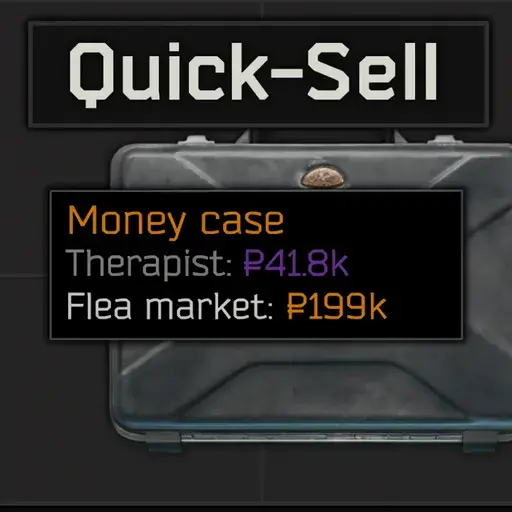
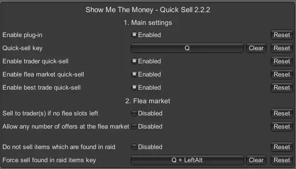

Quick-Sell
- Downloads
- 14,560
A quick update regarding SPT 4.1: I’ve had a lot going on personally lately, so I haven’t been able to dedicate much time to modding. However, I still plan to update my mod(s) for SPT 4.1. I can’t promise a Day One update, but I’ll do my best to get it out to you all as soon as possible after the launch.
As many of you have seen in the recent announcements from the SPT developers on Discord about the changes with Tarkov 1.0, the long-term outlook for SPT and FIKA is uncertain. If you haven’t read their message yet, you can find it here:
https://discord.com/channels/875684761291599922/875706629260197908/1439239841895158022
FIKA will no longer be adding major new features, focusing instead on support and bug fixes for as long as SPT remains viable.
For my mod, I’ll be taking a similar approach: I’ll continue providing maintenance updates and fixing bugs, but I don’t currently plan to develop new large-scale features. The project has grown far beyond what I expected when I started it, and it has genuinely been great to read your feedback and turn it into improvements. Thank you for every comment and conversation on Discord.
The mod’s source code is available on GitHub, so if anyone wants to fork it and build new features on top of it, feel free - you have my blessing.
What does it do?
In the grand tradition of making life marginally easier (and infinitely more entertaining), this mod allows you to instantly sell items from your inventory to traders or the flea market using a configurable keyboard shortcut combined with whichever mouse button you feel most emotionally connected to.
By default, the universe is arranged thus:
- Q + Left-click → Sell to trader (the financially sensible option)
- Q + Right-click → Sell on flea market (the entrepreneurial-but-risky option)
- Q + Middle-click → Sell at the best price, as determined by arcane calculation and a faint whiff of magic
All relevant configuration settings from the venerable Show Me The Money mod are automatically applied, as if by an invisible accountant lurking in the background.
If you’re using UIFixes v5.0.2 or later (Tyfon’s delightful gift to humanity), you can even select multiple items and sell them all at once. When selling on the flea market, items of the same type are automatically bundled. Like socks in a dryer, except these actually stay together.
Requirements
- You must possess the mighty Show Me The Money SPT-mod, version 2.2.0 or newer, without which this quick-sell addon would spend its days staring listlessly into the void.
SPT 4.x Installation
Extract the contents of the .zip or .7z file into your SPT directory with all the elegance and grace of a caffeinated space hamster.
After that, you should find exactly this file in your SPT installation:
- C:\yourSPTfolder\BepInEx\plugins\com.swiftxp.spt.showmethemoney.quicksell\SwiftXP.SPT.ShowMeTheMoney.QuickSell.Client.dll
SPT 3.11.x Installation
Extract the contents of the .zip or .7z file into your SPT directory with all the elegance and grace of a caffeinated space hamster.
After that, you should find exactly this file in your SPT installation:
- C:\yourSPTfolder\BepInEx\plugins\SwiftXP.SPT.ShowMeTheMoney.QuickSell.dll
If you use the Fika headless client
Splendidly simple advice: do not install this mod there. Nothing good will come from doing so. The client will ignore it, you’ll think it’s broken, and the universe will sigh. If you’re using Corter’s Mod Sync, please add this mod to your Exclusions.json.
Configuration
Adjust all settings through the BepInEx configurator (summonable through F12 or F1, assuming the stars are aligned and your keyboard cooperates):

Remarks
- Quick-selling is currently possible only from the inventory screen, likely because attempting to do it mid-raid would tear a hole in the fabric of space-time (and also be wildly unbalanced).
Known compatibility
- UIFixes v5.0.2 or later for SPT 4.0.x by Tyfon
Support and feature requests
All support and requests for new features will be handled as time permits, often between cups of tea and existential reflection. Please be patient. The universe is large, confusing, and full of bugs.
Version
2.3.0
This release is not compatible with SPT 3.11.x.
This release requires SPT version 4.0.11 or newer.
This release requires at least version 2.7.0 of the ‘Show Me The Money‘ mod.
Changes in this release:
- Recompiled for compatibility with ‘Show Me The Money‘ version 2.7.0.
Version
2.2.2
This release is not compatible with SPT 3.11.x. This release requires at least version 4.0.2 of SPT. This release requires at least version 2.2.0 of the ‘Show Me The Money‘ mod.
Changes in this release:
- “Can only sell items with ‘Found in Raid’ tag” setting in SPT/SVM is now taken into account by the mod.
For those who downloaded v2.2.1 - I deleted v2.2.1 from the forge, because it had a bug that you could no longer sell non-fir items to traders when the setting was enabled. This is fixed in this new version.
Version
1.2.0
⚠️This release is for SPT 3.11.x. It is emphatically, categorically, and in no uncertain terms NOT compatible with SPT 4.x. ⚠️
This release is a backport of SMTM Quick-Sell v2.2.2 for SPT 3.11.x, bringing with it (among other things, and possibly a few things nobody asked for) the following main features:
- “Can only sell items with ‘Found in Raid’ tag” setting in SPT/SVM is now taken into account by the mod.
- Some configuration dependencies from the “Show Me The Money” mod have been removed.
- And, of course, more stuff… because there’s always more stuff.
You must possess version 1.9.0 of SMTM, without which this quick-sell addon would spend its days staring listlessly into the void.
Version
1.1.0
This release is not compatible with SPT 4.x.x. This release requires version 3.11.x of SPT. Requires at least version 1.6.1 of the “Show Me The Money”-mod.
Changes in this release:
- Middle mouse button added as an additional sales option. Items are then sold to the best possible trader or at the flea market, depending on which option yields the higher profit.
- Added configuration option: Sell to trader(s) if no flea slots left.
- Added configuration option: Do not sell items which are found in raid.
- Added key-bind to force sell found in raid items.